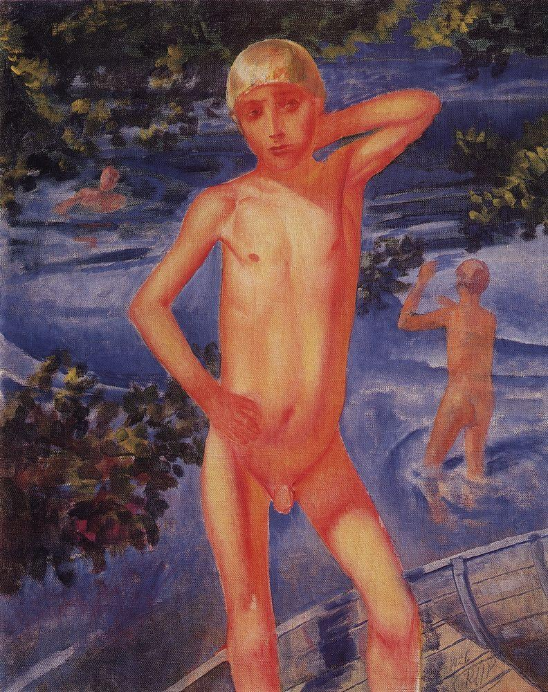

Warrax
Психопатологоанатомия VI: Je suis педофил (Джок Стерджес)
Подборка из ЖЖ, как и "Шарлиэбдовщина". Собрать вместе считаю целесообразным, писать статью специально -- нет.
К этому вот, про выставку любителя голеньких девочек: "В поле зрения Джока Стёрджеса попадают преимущественно девочки в период полового созревания".
neirolog: это классическая эротика с точки зрения кадров, как человек снимающую оную говорю -- то есть он ставил позы моделям, включая вызывающие... Плюс использованы приемы когда уже видимо модели за 18 позируют с теми, кому нет и 14. Таким образом, это --эротические фотографии с изображением голых детей.
ФБР в 90-х со спецназом разгромила студию как раз обсуждаемого фотографа. Правда, именно по нему дело спустили на тормозах, но ряд его работ "украшали" дома педофилов (оттуда на него и вышли) и сделаны были именно на заказ с передачей негатива (тогда еще на пленку снимали). Он поймал свой спрос, и фоткает -- я так думаю. А определенные силы благодаря спорности заставляют общество смириться с педофилией...
...рафинированные эстеты из Министерства культуры, которые, скорее всего, не глядя согласовали эту выставку, и теперь опасаются за свои задницы, решили воззвать к высоким материям:
"Несмотря на нападки на Стёрджеса за то, что в его работах зачастую присутствует очень юная обнаженная натура – снимки не оставляют ощущения порочности. Стёрджес не работает с обнаженным телом как с абстрактной формой, но устанавливает особый контакт с человеком, что делает его фотографии такими чарующими и непринужденными."
Так лично у меня и пресловутые немецкие порнофильмы не вызывают ощущения порочности -- просто тяжелая и нервная работа.
В общем, предвижу завтрашний дружный вой московских хипстеров, демократических журналистов, а также "всех честных и порядочных людей с хорошими лицами" по случаю подавления свободы и возвращения в тоталитарный "совок".
Нагрудные плакаты "Я -- Джок Стерджес" -- опционально.
Так вот: поражают, гм, странности мышления некоторых.
***
1. "предложили запретить выставку потому, что тот же фотохудожник делал _другие_ фотографии, _не_ представленные на выставке. Т.е., потому что _другие_ и _не_ представленные фото не соответвуют российскому законодательству, было предложено запретить _представленные_ фотографии. Это правовой нонсенс".
Наглядное отличие западного мышления от русского: что первичнее, закон или справедливость. Вот, предположим, есть реальный педофил (это о нём известно), который офигенно снимает, предположим, цветочки. Допустимо ли делать выставку его фото цветочков? По закону -- допустимо. А вот по совести, справедливости и логике -- нет. Понятно, что такое законом не проведёшь (всё не предусмотришь), но разрешений никто ответственный за таковые давать не должен с формулировкой "потому что".
hungry_ewok: При всей, порой, кривости законов -- "справедливость", "понятия", "обычаи гор" и прочее подобное -- нахрен с пляжа. Оно не работает, ибо не масштабируется на количество народа, больше небольшой деревни где все друг друга знают. И даже там бывают страшное и омерзительное шоу когда бьются насмерть две, три и более "справедливости", которые у каждого своя и все как одна самые-самые справедливые и посовестливые. Собственно оно даже в более-менее большом рабочем коллективе уже страшный скрип издает, и прогибается под тех кто более равнее. Не желай справедливости -- ты можешь ее получить.(с) Ну а про логику в ужжасной важности вопросе "допустимо ли живого человека без штанов изображать", и вовсе заикаться смешно. Кого-то вообще сам факт изображения человека оскорбляет до глубины души, и что?
Ошибка в таких рассуждениях стандартна -- мол, раз ВСЁ нельзя устаканить, то не должно быть ничего общего, даже если мнения совпадают. Не надо чел-овечески требовать "дайте нам веру в то, как надо Самым Правильнным Способом", а разумно отвергать явный брак. Евгеника -- понятие, применимое ко всем социальным областям, а не только к физиологии человека.
Конечно, справедливость -- это понятие, достаточно конвенциальное лишь в опеделённом социуме -- скажем, если бы этот фотограф не выносил свои работы из коллектива нудистов, так никто бы и не узнал.
Закон не может предусмотреть ВСЁ, поэтому должны быть "рычаги" управления помимо закона. Скажем, в этом случае. На хрена "по закону и против справедливости"?
И передёргивать не надо. Речь не о "вообще всех без штанов", а именно о детях возраста полового созревания.
true_r: Где логика в примере с цветами? По совести, если фотографии действительно представляют художественную ценность или хотя бы академический интерес, то их следует выставлять. Что справедливого в том, что бы отрицать работу человека, когда он оказался "нерукопожатым", как это принято говорить в либеральной среде? Личные антипатии к автору не должны быть критерием оценки его работ, а значит и критерием их прямой или косвенной цензуры. По факту, вы усложняете жизнь всем, кто мог бы опираться в своём творчестве на уже достигнутые другими людьми результаты, но теперь не сможет это делать, так как люди, скорее всего не способные оценивать ценность проделанной работы, взяли и решили сделать её недоступной.
Смена тезиса. Речь идёт не об оценке работ, а допустимости организации выставок и т.п. Для наглядности: Гитлер был неплохим художником, но делать его выставку недопустимо.
Художественные произведения -- это не наука/техника, чтобы отсутствие незначительного количества на что-либо повлияло.
Тем более, что речь идёт не о запрете публикаций -- т.е. где-то там в академических журнлах, если достойны этого, пусть будут. А вот возвеличивание такой личности -- выставки, книги и проч. -- не-а.
дополнение: "Что должно быть в стране, а что не должно -- НАПИСАНО В ЗАКОНЕ".
-- Значится, так. Я почитала УК и, к своему удивлению, единственный запрет на изображения детей, который там нашла -- это, да, запрет на детскую порнографию. НО! Мы все взрослые люди -- и прекрасно понимаем, что сексуальную тематику можно очень активно эксплуатировать не то что без демонстрации половых органов и "сексуально откровенных действий", но даже вообще без обнажения модели. Дети, согласно морали, принятой в современном российской обществе, в эксплуатации сексуальной тематики участвовать не должны. УК, стало быть, явно страдает неполнотой. Я стала искать дальше и нашла вот это: Статья 5, пункт 3.1: продукция эротического и порнографического характера не должна содержать изображения образов несовершеннолетних. Поскольку я не юрист, то не знаю, как проект закона учитывают на практике и как он сочетается с имеющимися законами и подзаконными актами. Может оказаться и так, что прямо сейчас демонстрация эротики (не порнографии!) с участием несовершеннолетних -- дело неподсудное. В таком случае, в законодательстве имеется очень неприятный пробел... и я, пожалуй, в какой-то мере начинаю понимать "активистов", которые не стали обращаться в прокуратуру. Что же касается самих фотографий (именно с выставки, а не откуда-нибудь ещё!), то их можно посмотреть тут - и тут Эротика, по-моему, налицо. И несовершеннолетние обнажённые модели -- тоже. Да и 18+ при входе на выставку "какгбэ намекает", что там будут не амурчики и не античные статуи.
***
2. "Сам фотограф - и его модели - принадлежат к общинам нудистов; это такие люди, которые в теплую погоду все время голыми ходют. Все. включая детей и подростков. Снимал он их всегда в естественной среде обитания, тсзять.Не всякая фотография ребенка/подростка/взрослого без одежды - является порнографией, в тч педофильской. Многих моделей он снимал, тсзять еще с пребывания в утробе матери, в течение многих лет, и во весьма взрослом состоянии тоже. Нудисты не _все_ педофилы. Они _не являются_ педофилами на том основании, что постоянно лицезреют голеньких деток и подростков".
Вопрос "как относиться к нудистам" оставим за рамками этого поста. Но всё просто: раз такое -- норма у нудистов, среди нудистов же -- и только у них -- это фото можно показывать.
Знаете, сколько различных затейников "как принято у нас в племени" могут описать этнографы? Что, можно всё-всё снимать и показывать публике как "искусство"?
***
3. Чуть не забыл: "если сейчас начать перечислять, сколько детской обнаженной и полуобнаженной натуры в советских фильмах имеется.. Боюсь, что почти всех режиссеров, снимавших фильмы для детей, придется запретить к показу.."
И в каких же советских фильмах есть детская обнажённая натура вида "девочки в период полового созревания"? Огласите весь список, пожалуйста!
Dmitriy Styazhkin: Девочка и эхо:
Петров-Водкин, купающиемя мальчики. Ну да, не фильм, а картина, и мальчик, а не девочка, но ведь разница не принципиальна?

1. Сцена фильма:
"Однако, когда вожак решает отомстить Вике и прячет её платье во время её купания, Роман попадает в ситуацию, в которой ему приходится держать экзамен на дружбу. Роман из-за насмешек ребят малодушничает — и не подает платье Вике, сидящей голышом в воде. Вика проходит через строй ребят сама, чтобы забрать своё платье, и бросает в лицо мальчишке самое страшное, что он может услышать, — обвинение в трусости".
Вполне оправдано по сюжету, всё естественно, а не постановочная и не эротика. Плюс не надо забывать, что это снималось в 1964 году, тогда тема педофилии в СССР актуальной не была.
2. Ну, хреновая картина. С таким качеством как-то уже пофиг, М или Ж :-) Хотя и нефиг.
На этом спискок заканчивается? Сравниваем с теми фото -- где полно постановочно-эротических, с профессиональным качеством, педофилы ценят.
Для того, чтобы по сюжету, не обязательно показывать в полный рост и т.п., так-то есть целый поджанр в соотв фильмах: "женщины в неловких ситуациях". Там тоже по сюжету.Что до Петрова-Водкина, то при Сталине ему дали звание заслуженного деятеля искусств. Думаю, они не считают, что картинка хреновая. Список можно прожолжать, просто не хочу зафлуживать тему картинками. Но если хотите, то вот:
Александр Дейнека, 1935 год.
1. Не обязательно. Но, повторяюсь, 1964 г. И показ там существенно отличается от обсуждаемого фотографа. Можно, я не буду повторять аргусменты, а?
2. Думаю они не считают что картинка хреновая -- согалсен. Я вот -- считвю. Кому и Малевич -- художник. На второй картине детализация ещё хуже :-) И нет эротических пов в принципе.
"меня умиляет позициция «Вот картины Дейнеки» — искусство, а фотографии — не искусство. Хотя Дейнека куда больший порнограф, чем Стёрджес".
Я лично не считаю, что картины Дейнеки -- это искусство. Так, мазня. Сам и так не умею, но тем не менее. Но именно потому, что мазня, на порно не тянет. Впрочем, я не против отсутствия выставок Дейнеки с голыми мальчиками (хотя разница уже разобрана -- в быту и специальное позирование), тут суть темы -- именно чтобы а ля Стёрджес выставок и проч. не было.
Сторонники свободы изображений поднапряглись и смогли разыскать две советских картины с неодетыми девочками: "Девочка и эхо" (1964) и "Про Красную Шапочку. Продолжение старой сказки" (1977). Сравните явно эротические позы на обсуждаемых фото и эти фильмы.
К тому же не надо проецировать современное восприятие на те времена.
http://www.tema.in.ua/article/8904.html
"Посмотрев в детстве по телевизору фильм "Девочка и эхо", я мечтал лишь об одном: о повторе показа. История, рассказанная в фильме, глубоко запала в душу мне, тогда еще 12-летнему мальчишке. Многое поразило в этом фильме: красота горных пейзажей, моря, пронзительное эхо, и, конечно, то, с какой естественностью (а отнюдь не бесстыдством!) девочка моего возраста купается в море голышом. Пожалуй, самое сильное впечатление оставила последняя сцена, когда героиня, собрав волю в кулак, выходит перед мальчишками, чтобы забрать у них свою одежду. Поступок, который заставил меня с куда большим интересом и уважением смотреть на окружающих девчонок".
При цензуре, царившей в советские времена в кино, странно было бы подозревать режиссеров в детской эротике или порнографии. Видимо, нравы тогда были незатейливее. Голые дети у воды не вызывали нехороших ассоциаций.
Дважды видел кинофильм "Красная Шапочка" - ни разу в нём этого эпизода не было. Возможно, что опомнились и удалили. Ну, а что, скажите, в нём хорошего, и почему без него фильм проиграет? И таки да, от голожопых пацанов, глядящих на самолёт, как и от "Купания красного коня", попахивает педофилией.
С баша, #415200
roman: Гей-гоп!
Ольга: кто?
roman: Испорченное поколение
roman: А раньше это была всего лишь присказка Карслона из сказки Астрид Линдгрен.
Именно так. Прекрасно помню, что анекдоты про гомосексуалистов в детстве рассказывались так же, как и про дистрофиков: в теории такое бывает, конечно, но не до такой же степени и не у нас!
А сейчас вот в поиске выпало мнение про фильм Леденец (Hard Candy, 2005):
"Сперва от этого фильма у меня не было ничего кроме раздражения. Но потом я задумался. А как отреагируют на этот фильм педоборцы и люди не сочувствующие педофилам? Неужели он им понравится? ... Вот в этом и заключается гуманизм этого фильма. В том, что он вызывает отвращение к девочке-маньяку и сочувствие к педофилу. Он о том, что какими бы ужасными нам ни казались педофилы, мы должны оставаться людьми. В конце концов педофилы тоже люди".
Фильм, кстати, рекомендую. Сочувствие к педофилу он может вызвать только у сочувствующих педофилам.
http://russkiy-malchik.livejournal.com/778111.html
...сейчас в соцсетях пошла новая волна, высмеивающая запрет этой выставки: защитники старого любителя ню созревающих тел приводят многочисленные кадры обнаженки в искусстве, даже — вот! посмотрите, мракобесы — оголенных детей в советских фильмах. Участники оправдательного моба в рунете считают себя остроумными, но на самом деле совершают глупейшую подмену. Стоит любому здравомыслящему человеку посмотреть фотосессии этого "художника", а также отрывок из фильма, где он снимает молодых нудисток, сам стоя у камеры с голой задницей, чтобы понять, что он никакого отношения к искусству не имеет. Это даже не эпатаж и заработок на нарушении табу (хотя и это в том числе), но чистейшей воды извращенная сексуальная страсть. Голое тело ребенка ради голого тела, ради его вожделения.
В советских кинокартинах оголенные дети предстают как дети, непорочные ангелы, которые так и воспринимаются объективом камеры и зрителем. Даже в античной скульптуре тело предстает как идеальное выражение божественного аполлонического начала. Здесь же пытливый взгляд фотографа цепляется за каждую детскую выпуклость и ложбинку, выискивает раннюю похоть у созревающего ребенка и разжигает ответную у зрителя. Того, кто говорит об этом честно, сразу обличают в извращенности: это известный прием защитников разврата — обвинить в нём не того, кто совершает извращение, а того, кто называет это извращением. Это, кстати, любимый прием и педофилов: мол, дитя, ты сам придумываешь извращение, на самом деле, все нормально.
***
4. Имеются мнения вида "это же Лена Миро написала!".
Я, честно говоря, не в курсе, кто это (хотя вроде где-то слышал) -- глянул ЖЖ, там стандартные тексты "для побольше подписчиков" со скандальными обзывалками + как я понял, она на фитнессе подвинута, особенно на той части спины, которая внизу резко меняет название. Ну да не суть.
Всё просто: да пофиг, кто написал -- вопрос "зачем сделали вброс" (по странному совпадению, перед выборами) -- это одно, а сама суть явления (фотографий такого рода) -- другое. И нефиг смешивать. Первое -- сиюминутно, второе -- важно, не побоюсь этого слова в таком контексте, стратегически.
***
5. Это же офигеть, какая-то неправительственная организация смеет решать, что выставлять!
Не буду спорить: никому неизвесные досель "Офицеры России" появились -- внезапно! -- в нужное время в нужном месте аки "Тампакс". Я ни разу не исключаю вариант "всё было затеяно именно для того, чтобы представить и пропиарить очередную официальную молодёжную патриотическую организацию, а то все предыдущие что-то стухли". Что, опять же, не имеет никакого отношения к вопросу "допустимы ли подобные выставки таких вот фотографов".
***
6. Есть мнение: это всё для пиара, и если бы никто не поднимал волну, так мало бы кто знал.
Логично. Но отношение "и пофиг" было бы верным в том случае, если бы чиновники не пропускали бы такое, не давая разрешений, сами. А когда уже есть -- то не-возмущение будет лишь дополнительным плевком в Россию: мол, у них прошла такая вот выставка, и никто не возмущался, Россия становится толерантной!
Показательно, что возмущаются на тему "пришли люди не от государства и перекрыли вход для приобщения к бесстеснению" больше всего именно сторонники т.н. "гражданского общества".
"Народ знать не знал про эту выставку. А теперь этого фотографа обсуждают в каждом доме".
Т.е. лучше, чтобы такие выставки проводились чаще, если массово народ не в курсе и не имеет возражений? Интересный аргумент. Работает именно на открытие окон -- мол, уже 100500 раз проводили, чего возмущаться? "Пиздить их надо, пока они маленькие" (с)
"...кто бы знал этого Джока с его педо-фотографиями..."
Позиция, по меньшей мере, странная. Получается, что виноват не тот, кто наложил кучу в общественном месте, а тот, кто ее обнаружил и предложил убрать. Давайте все вместе заткнем носы, окружим кучу заборчиком и будем обходить кучу стороной. Если я не вижу кучу – значит, ее нет, мне так хорошо в моем мире розовых пони и белых единорогов, не возвращайте меня из фантазий в этот реальный мир с большой вонючей кучей.
***
7. Мне вот что интересно (безотносительно к Стёрджесу). Сатанизм же предполагает индивидуализм. Разве может сатанист апеллировать к социуму, обществу? А так, у каждого свои вкусы и, может быть, и извращения. Ну то есть, разве сатанизм не предполагает «либеральную мораль»?
noldo_ecthelion: Я не сатанист, но попробую предположить,как это видится со стороны.
Сатанизм, насколько я понимаю, предполагает наличие взрослой личности. Взрослая же психологически личность характеризуется в том числе тем,что а) внутренне самодостаточна, б) способна к системному анализу на перспективу других агентов/аттракторов, обладающих меньшим уровнем внутреннего развития в) обладает широким горизонтом планирования.
Т.е. сатанист может просчитать, что некие действия, потенциально не опасные / не важные для него самого, могут вызвать нежелательную реакцию окружающего его общества / отдаленные негативные последствия,что создаст угрозу для его психического и/или физического благополучия.
Учет только своих интересов изолировано,приводит к ошибкам планирования, снижает рациональность поведения и является одним из признаков инфантильной личности.
В общем, поскольку жить в обществе и быть совершенно свободным от общества невозможно, следует прогнозировать и учитывать его реакцию (не обязательно прямо прогибаться под текущее мнение, но учесть стоит) и/или отдаленные последствия принятых в текущий момент решений.
Именно так. Но надо, помимо логики, учитывать и этику: антиразумные действия/позиции (в частности, либерализм) попросту противны, отторгаются инстинктивно. Что, понятно, не отменяет возможности объяснения такого отношения.
И нехер в дихотомии кидаться.
Есть, скажем, тупой эгоцентризм, а есть разумный эгоизм, который учитывает, что живёшь не в сферическом вакууме. Сатанизм -- это развитие, имманентно связанное с разумностью, что допускает девиации вида "дело вкуса", но противоречит именно извращением (гармоничная развитая психика в таком случае невозможна). Либерализму сатанизм противоречит, соответствует разумный тоталитаризм.
См. по теме "Сатанинскую азбуку", гл.24.
Не так уж редко можно встретить точку зрения «сатанисты должны выступать за либерализм», но обосновывается это подростковым желанием «я хочу эпатировать окружающих и чтобы мне за это ничего не было». По сути же либерализм сводит всё к деньгам; они стали новой религией, которой приносится в жертву прогресс (пример: бытовые финтифлюшки типа айфона дают большую прибыль, чем освоение космоса), а из людей делают электорат, который голосует за самого распиаренного политика, и идеальных биороботов-потребителей, которые послушно следуют рекламы.
Интеллектуальные, психологически развитые, самостоятельно мыслящие граждане либерализму не нужны. Так что сатанизм никак не может поддерживать либерализм. Ну и, в конце концов, вы как себе либерализм в Аду представляете, даже метафорически? Демократические выборы Сатаны каждые несколько лет и ангельская оппозиция?
Также см. лекцию «Δαιμων»-6, Warrax: «Против либерализма с точки зрения сатанизма» (06.03.2015)
***
8. И, кстати говоря, приснопамятное отсутствие системного мышления, неспособность видеть не глубже внешней формы, приводят к стандартной подмене. Суть -- не в форме! Никто же в здравом уме не предлагает надеть памперсы на статую писающего мальчика или подрисовать подгузники всяким амурчикам на картинах?
Суть здесь не в "а-а-а, неодетое дитя!!!", а именно в показе детей как сексуальных объектов. Эротичные позы, съемки вместе со вполне сформировавшимися моделями ню в одном кадре и т.д.
Приведу парадоксальный на первый взгляд пример: в США есть такое явление, как детские конкурсы красоты -- до 7 лет, когда пятилеток оформляют как взрослых моделей. Вот если бы эти пятилетки сидели бы голышом на пляже и лупили куличики -- это было бы нейтрально, но в такой роли даже одетые маленькие девочки с "взрослым" профессиональным макияжем, укладкой и проч. -- это именно открытие окон Овертона на радость педофилам.
***
9. "А это официально не порнография!".
Да пофиг. См. комментарий к п.1, а также обращаю внимание на жонглирование терминами с целью маскировки. Некогда в статье про недопустимость легализации проституции я писал:
"Если спросить что-то типа «можно ли легализовать проституцию», то у многих сработает шаблон «почему нельзя, раз все равно есть». Если спросить «можно ли осуждать проститутку лишь за род занятий», то сработает шаблон «надо отделять человека от рода занятий» (что неверно, см. далее).
Единственный корректный вопрос в данном случае, чтобы понять действительное отношение, это «примерка лично», а именно: «Относились ли бы нейтрально к тому, что вашу дочь ебал бы кто угодно за деньги? Женились бы вы лично на той, которую ебут за деньги, и об этом знают окружающие?». Обратите внимание: это суть явления; достаточно нейтральное «проститутка» иногда воспринимается «это такая работа»; также бывают возражения вида «я бы не хотел, чтобы мои дети работали <список прилагается>, и что из этого, чего это вы зациклились на проституции» и проч. Спрашивать надо по сути дела и без эвфемизмов, строго про интересующее явление, не давая увести разговор в сторону. А не как обычно делают опросы, по которым православных получается больше, чем верующих.
Не думаю, что сколь-либо значительный процент русских скажет «да, мне это пофиг» (или «одобряю!») и «да,
без проблем женюсь на такой»".
Так вот, тут ровно то же самое. Пофиг, официальное это порнография или нет, какова используемая дефениция термина "порнография" и т.д. Суть -- именно в том, должно ли не возражать против фотографирования с публикацией фото голых девочек в период полового созревания, да/нет?
И далее, соответственно, если кто-либо не возражает, то сами подумайте, а ЗАЧЕМ это обществу? Не отмазываясь общими словами на тему "свободы самовыражения" и проч., а конкретно -- ЗАЧЕМ такие фото в общем доступе?
.Знаете, я много лет пытаюсь работать с обнаженной натурой (фотографировать обнаженных детей у меня даже мысли не было, и я не задумывался, почему. Нет - и всё).
Вот так и должно быть -- "и в голову не приходит". При этом пофиг, как это называется формально.
Мария Киселева, кандидат психологических наук:
"Томный призывный взгляд, полуоткрытый рот, возбуждающая фантазию недосказанность, недопоказанность позволяют фантазии дорисовать желаемое. Маэстро знает, что делает. Это не примитивное порно, это значительно более эффективный способ эксплуатации детской сексуальности. Все по закону. Все по согласию и без смущения. Но так ли это в психической реальности девчонок, которых так искусно использует престарелый фотограф? ... Глядя на фотографии Стержеса, удивляешься их однотипности и искусственности. Как будто фотограф зафиксировался на одном сюжете и не может сменить пластинку. Удивляет искреннее непонимание автором порочности происходящего. А еще больше удивляет, что многие смотрят на это не щурясь, не испытывая неловкости. Возникает вопрос: а если это Ваша дочь по согласию и без смущения? Нет, нет, все по закону, органы показывать не будем. Только немного голого тельца и взгляд такой манящий? Главное, не обманывать себя!"
***
10. "приведу аналогию с нашим всем - Пушкиным. На том основании, что у Пушкина ЕСТЬ порнографические и аморальные стишки - нужно запретить читать детям ВСЕ его произведения. И изъять его из общедоступных библиотек".
Безотносительно того, принадлежит ли "Лука Мудищев" или ещё какое произведение перу Пушкина, указываю на передёргивание: не надо сравнивать обычное порно и т.п. с тем, о чём речь -- обнажённых девочках в период полового созревания. Точно также не стоит сравнивать с младенческими фото типа "голышка в два года" (хотя я лично искренне не понимаю, зачем делать такие фото вообще, безотносительно педофилии и прочего).
"...если наша духовность последнее время вдруг болезненно реагирует на обнаженную натуру, то давайте решать последовательно и фундаментально. Не пора ли нам разобраться со всем мировым и отечественным искусством? С античными гениями, гениями Возрождения. С их Апполонами и Давидами, Венерами и амурами, которые все, как один, голые и с причиндалами" (с) Николай Сванидзе; не уподобляйтесь ему и другим демагогам.
"У Пушкина есть порнографические и похабные стишки, в том числе оскверняющие Богородицу, непорочное зачатие и самого Христа. Давайте на этом основании выкинем его из библиотек. И запретим читать детям".
"Гаврилиада"? Не надо подменять тезис: безотносительно того, как верующие относятся к данному произведению, это лично их проблемы. Фотограф же открывает окна для ВСЕГО социума. Соответственно, ЗАЧЕМ такие фото как норма?
***
11 .Кстати, тут ещё есть подвопрос: одно дело -- когда среди множества работ имеется пара сомнительного характера, и совсем другое -- когда все работы именно такие, других просто нет.
"Потрудитесь найти отличия между искусством и старым похотником с признаками сексуального расстройства.
Заглянув через гугл на его фотографии -- в этом можно убедиться. А еще лучше поитнересуйтесь у практикующих психиатров -- какой диагноз ему поставят данные специалисты, обратись он к ним со своей проблемой -- патологическая тяга к малолетним и подросткам. Это старый мудак не фотографирует же котиков, городские пейзажи или на худой конец -- голых теток! А исключительно -- малолеток. Обнаженных".
***
14.
-- Рекомендую посетить одноглазники и хорошенько там пошарить по семейным альбомам. Уверена, правый сектор, то есть тфу, чё я говорю, "офицеры россии" померли бы, бегая за всеми этими мамашками и бабульками.
-- Магдуся, ждем откровенной фотосессии с детишками...
-- Хочешь на голых детей посмотреть? Мне кажется, Марат, как психолог тут уже все понял насчет тебя.
-- мне ни к чему, девушко...хотелось бы взглянуть на ваш героический поступок...
-- То есть, фоточки ты будешь рассматривать? И даже может быть оценишь степень героичности моего поступка в зависимости от степени обнаженности детей?
evgenijm86 (о, не зря забанил):
-- Провокационным это изображение может показаться лишь тем людям которые это изображение опознаются именно в таком ключе. Т.е. их базовые инстинкты оценивают изображение как сексуально привлекательное, но их моральные установки говорят им обратное. Получается внутренний конфликт. Т.е. возмущены этим в основном те, кто имеют педофильские наклонности. Только это их личная проблема, а не проблема выставки. Есть же вполне здоровые люди которые вообще ничего эротичного не увидели в таких картинах - им бы и в голову не пришло поднимать кипежь по этому поводу.
-- Подобные фотографии провоцируют эротические эмоции. В том-то и дело. У обычных людей. Скажем, у бОльшего процента, чем при рассматривании фотографии, например, новогодней ёлки.
Уточняю: это, опять же, стандартная демагогия. Скажем, лично у меня никакие кресты, иконы, идолы и проч. не вызывают религиозного чувства. Но есть те, у которых вызывают даже "по десятой ассоциации" (множественные случаи вида "это пятно -- богородица!!!"). Наглдядно на примере того же гомосексуализма: как только он стал типа-тоже-нормой, количество гомосексуалистов резко возросло. Ровно то же работает и в обсуждаемом случае -- понятно, что не сразу, а постепенно. В результате имеем такое вот:
"-- ...это диагноз состояния извращенности общества. Как же небезопасно жить девочкам в мире, где такие невинные и полные изящной юной эстетики фото (визуально на другом полюсе от пошлости) запрещают под предлогом того, что они могут возбудить местных педофилов и называют порнографией".
В начальных пунктах этой подборки разбиралась тема про советские фильмы и т.п., но там, обратите внимание, обнажённая детская натура -- по сюжету и без акцента. Сюжет, драма -- а не "изящная эстетика"! А теперь -- таки да, общество куда более извращено, и педофилы очень не против сделать типа-тоже-нормой "изящную эстетику".
***
15. "Если вас постоянно по слабощутимым поводам (как с этой самой фотовыставкой) беспокоит данная тема и вызывает стойкое желание бороться, то стоит покопаться в себе - там прячется либо собственная травма, либо латентные желания".
Во-1, подмена "имеется позиция против" на "стойкое желание бороться". Мнение некорректно приравнивать к активным действиям. Возможно, у кого-либо, кто именно что жить не может, чтобы не возмущаться именно одной определённой темой, и есть проблемы с психикой, но речь-то идёт о другом -- об отношении к явлению.
Во-2, демагогический тезис "если ты против гомосексуалистов, то сам такой же латентный" уже давно надоел. Мол, каждый адекватный индивид -- латентный гей, некропедозоофил, наркоман, предатель Родины и далее по вкусу.
Короче говоря, железобетонный довод всех педерастов: любой кто выступает против того, что педерастия -- это норма = латентный педераст. И попробуй опровергни. Теперь ещё и Красная Шапочка... найдут у чувака фотки с голыми детьми, а он такой, мол, а я тут ни при чём, и козырем Красную Шапочку. Шах и мат. Да и вообще, он же не детьми голыми любовался, а игрой света и тени, удачной композицией и изящной позой, а вы что подумали? Да вы извращенцы!
Обратите внимание на переход на личности: мол, а ты сам, случаем, не такой? Если не такой, то и не выступай против! Хотя проблема -- именно общественная.
***
16.
Эдакое милое передёргивание, дополнение к п.15. Тема стандартная: "не нравится -- отвернись!", либеральная этика. Русская этика -- иная: если чего быть не должно, его быть не должно. Тут, понятно, понятие о дОлжном -- не такое уж простое, но это уже форма, а не суть.
Можно допустить, например, существовование педофила, которые понимает, что болен, поэтому силой воли не проявляет свои устремления и выступает против такого вот "искусства". И это -- куда более достойная позиция, чем 100% эталонного сексуального стандарта, который защищает позицию "лично меня не возбуждает -- значит, можно без проблем". Факт остаётся фактом: на фото, снимаемых этим фотографом, имеет место эротизация девочек в стадии развития полового созревания. Зачем нам в социуме такая норма? Ответов на этот вопрос нигде ни у кого не видно, одни лишь вопли "за швабоду".
Старое, ещё 2005-й год:
Давайте себе представим некое гипотетическое об-во, все из себя разумное, в котором можно делать всё-всё, что представляет собой разумное действие (т.е. направлено на прогресс, развитие и т.д. и т.п.). И в котором жестко запрещено делать то, что НЕ разумно -- то, что дегенеративно.
Разумному сапиенсу в таких условиях будет весьма комфортно жить. Ну, скажем, если сейчас введут квалифицированную смертную казнь за зоофилию -- что до этого?
Но вот либерасты -- они другие. Они все равно будут супротив "ограничения свободы", даже если сами "не такие". Т.е. будут бороться за права зоофилов в указанном примере.
Спрашивается, а зачем?
Отвечается: а если обобщить, то либеральная мораль отстаивает право делать что-нибудь грязненькое. Если это не наносит непосредственного вреда окружающим (а, точнее, если за этим не застукали и на суде не доказали виновность) -- то пожалуйста!
-- Этот фотограф просто очень хороший Мастер. И его фотографии понятны не всем. Дремучим ханжам точно не стоит пытаться понять.
-- какое там искусство? какие-то тюремные фотографии. стоит голая девочка лет 7ми. с недобрым взглядом. чё сказать-то хотел, касатик?
-- о чем и речь - Дремучим ханжам точно не стоит пытаться понять.
"Не понимаете вы высокого искусства!" -- очень характерный маркер.
-- "Явно виден эротический подтекст."
Вам виден. Мне не виден. Я вижу ребенка. Которого никак не могу рассматривать как сексуальный объект. Эээ, батенька, да у вас педофильские наклонности...!! Раз подобное видите в красивом художетсвенном фото ребенка. это не ребёнок или фотограф виноваты, в том что вы видите эротику на этих снимках, а ваш мозг виноват, ваше восприятие обнаженного детского тела. Я уверен, что вы из тех, кто глаза не отводит, видя, что девочка переодевается и видны её трусики и тело, а разглядывает её с интересом.
-- Не знаю, что там у фотографа на других фотографиях, но те две, которые показаны в этом блоге, никакой художественной ценности не представляют. Одень девочек и будут еще две из миллиона самых обычных фотографий: нет ни сюжета, ни композиции. Автор снимает именно детскую наготу. Она его почему-то привлекает. Так же, как и вас. На мой взгляд это не совсем нормально.
-- я же и пишу, что у вас наклонности. Вы не понимаете о чем идёт речь и что изображено на тех фото. Вы ограничены.
Нагляднее некуда: протаскивается именно "как норма". И обратите внимание на "оговорку по Фрейду": ежели пишуший такой вот наивно-непрошибаемый и говорит лишь только "за себя", то даже он понимает: если девочка переодевается, то то надо отвернуться, а не разглядывать. И при этом ратует за подобные фото, ага. Саморазоблачительно, люблю такое.
-- Вы лишь пошлость видите и выдумываете на его фото.
-- Ну железная же логика! "Изящные вкусители" детских тел отстаивают своё право глазеть на фотки старика- рукоблуда, а "пошлые", удивленные увиденным, отказали себе в подобном "удовольствии". На воре и шапка горит.
"Это вы, ярые ненавистники, видите то, чего нет и заявляете, что автор имел в виду именно то, что вы видите. Это вы испорчены, а не фотограф. Нужно ли объяснять, что женское тело наиболее красиво во время взросления?"
Не "недавно принявшее женственные формы" и т.п.", а именно "ещё не взрослое", ага.
ivanova_ffm: ...я думала о том, что произошло, вспоминала "Лолиту" Набокова, рассказы Достоевского и Настасью Филипповну из его романа "Идиот".
Я поняла, что меня отвращает наиболее в этой выставке. Это то, что на эти фотографии нельзя смотреть, не помня о фотографе. Если бы это любящие родители-нуддисты вдруг решили организовать выставку, то они пофотографировали и выставили бы себя, своих соседей по пляжу, своих детей. И мы бы смотрели на детей глазами их родителей.
А здесь, в каждой фотографии, каждой позе ребенка мы чувствуем присутствие талантливого вояриста с извращенным взглядом педофила. И меня тошнит от того, что люди смотрят на этих прелестных девочек мерзкими и липкими глазами педофила.
***
17. "Для сведения наших «блюстителей морали» и «знатоков русских моральных традиций»: до XIX века в России не было разделения общественных бань на женские и мужские — они были общими, и (о ужас) дети туда тоже ходили! И что-то в поголовном разврате Россия никогда замечена не была".
Из комментов там же:ПСЗ. T . XXI . № 15379, 8 апреля 1782 r .
Полиции надлежало надзирать за всеми публичными собраниями и увеселениями, за исполнением законов, регулирующих расходы населения в интересах государства, инспектировать здания, следить за тем, чтобы в торговых банях мужчины и женщины мылись в разных отделениях, ...
Т.е. даже М/Ж разделяли.
Впрочем, не спорю, бывало всякое, цитаты из обсуждения:

Вполне себе исторический документ - неоспоримый и конкретный.
Место - центр мегаполиса (подсказка - Пушкинская набережная, ЦПКиО).
Время - начало 30-х годов прошлого века.
Обратите внимание: все подростки купаются в самом людном месте совершенно обнажёнными. Никого это не шокирует.
ХИНТ: в той же серии фотографий есть снимки, где обнажаются для купания и совершенно взрослые люди. Никого из окружающих сей акт совершенно не шокирует - купание в обнажённом виде реально было частью периферийной культуры. В городской культуре уже принято было одевать купальные принадлежности - в сельской нет!
Мигранты везли это с собой в города - где горожане относились совершенно снисходительно: ну, деревня - ну и чо?
...из публичного оборота те самые "крамольные" кадры фактически изъяты - на принципе самоцензуры. И произошло это примерно в эпоху между 50-ми и 60-ми годами.
Помню по личным воспоминаниям: 50-е годы. Купались в деревнях голышом - пруд, с одной стороны доярки, с другой - механизаторы. После смены, под вечер. Сам пруд - метров 25 (ну, классический противопожарный пруд). Если кто из мужиков приближался слишком близко - девки на него орали. Но со смехом - мол, пошёл вон отседова, охальник!.. Хиханьки-хаханьки...
Детвора - в смешанных группах только голышом, лет до 15.
На городских в купальниках смотрели с ухмылкой: мол, чего с них взять то? Выпендриваются же...
Если припомнить историю, то реально нижнее бельё вида хотя бы "трусы семейные" начали носить относительно поздно, а в подштанниках и рейтузах соотв. -- не особо покупаешься.
Обычаи изменяются, и дело далеко не всегда в ханжестве, как это обычно стараются преподнести. Бывали в деревенских избах стандартной модели "пятистенок", когда вокруг русской печи имеются условные перегородки даже без дверей. Вот представьте: туда набивается толпа народу "и стар, и мал" -- и как-то в этих условиях появляются новые дети. Я бы не смог :-) И дело тут не в ханжестве, а смены восприятия секса от "просто животный трах" до формы общения между индивидами.
Вспоминанаем туалеты тех времён типа "длинный ряд дырок в полу даже без перегородок между". И ничего, не стеснялись -- мол, какая ещё отдельная кабинка; городской, что ли? Надеюсь, никто не хочет сказать, что раз тогда было "типа норм", то и сейчас такое вполне допустимо.
И, как уже устал повторять: одно дело -- показ обнажённого тела в бытовых картинах (см. фото в этом тексте), и совсем другое -- специальные постановочные съёмки детей по методике эротического фото. Попытки перевести тему на "просто голые детишки в деревне" -- это демагогия.
***
23. псевдопсихологический анализ про Тень по Юнгу.
"Что же касается стандартного предложения про фото , вы если способны воспринять то что вы сказали , вполне себе содержит противоречие .Ибо размещающих выставки подспудно причислили к "педофилам" и тут же предлагаете этот вариант в качестве некоего контраргумента -мол не пидофильно. Тут вот в чем фокус (внимание) не на выставке,а на вашей реакции -вы заведомо предполагаете что зрители будут пускать слюни на картинки, и другое у вас не укладвается в голове.Это и есть тень-ваша персональная тень,в которой либо травма ,либо латентность".
Тут более тонкая подтасовка, чем стандартное "про латентных". "Забывается", что смотреть можно не только "от себя". Т.е. если некто возмущён эротизированием детских образов, это НЕ значит, что он сам воспринимает их эротически -- просто понимает, что в таком виде (позы/освещение и проч.) их как эротические воспримет гораздо больше людей, чем если бы были просто бытовые фото. Особенно одетых детей, ага.
Аналогия: я против легализации наркотиков не потому, что-де это я лично не удержусь и начну покупать, а потому, что понимаю, что так наркоманов станет больше.
***
24. ...конечно же, находятся защитники. Мол, цэ не педофилия, цэ искусство, дескать не одевать же в бикини античные статуи...
С глубокого детства рассматриваю обнажённую натуру в Эрмитаже, в Русском музее и просто на улицах нашего славного города. И сколько я себя помню, после лицезрения произведений мастеров прошлого у меня ни разу не возникало желания сбегать в туалет и, как бы сказать поделикатнее, снять напряжение...
Предлагаю сравнить два портрета несовершеннолетние девочек - XVIII и XXI века: потрет маленькой Елизаветы Петровны (будущей императрицы) в чём мать родила -- работы Луи Каравака, и снимок одетой девочки, сделанный Стерджесом. Почувствуйте разницу...
***
25. Журнал "Сноб":
«...все общества можно разделить на общества признанной личной ответственности, так сказать, «общества взрослых», и общества сниженной личной ответственности, «общества детей»... В обществах большей ответственности считается, что индивидуум не может оправдывать свои действия чьей-то провокацией — он сам и только сам отвечает за себя.
Для него не может быть связи между увиденным порнофильмом и последующим изнасилованием, фотографией голого ребенка и развратными действиями с несовершеннолетним, как не может быть оправданием воровства плохо лежащий кошелек, а оправданием хулиганства и агрессии — просмотр фильма про варварское средневековье или бравого боевика. В обществах низкой ответственности индивидуума надо оберегать. Ему нельзя демонстрировать ничего: ни голых детей (побежит соблазнять), ни сигареты в магазине (начнет курить). ...
В обществе большей ответственности внимание обращено на себя. Одни говорят: «Я не буду это демонстрировать, я считаю это опасным (некрасивым, неуместным, непривлекательным) / я не пойду смотреть на эту демонстрацию, мне она не нравится», тогда как другие, наоборот, демонстрируют и/или идут смотреть. Нормой такого общества является ненавязывание: то, что вызывает противоречивые мнения, демонстрируется для своих, с возможностью для оппонентов не участвовать; однако рамки демонстрации, принимаемой за норму, достаточно широки...».
Эдакий интеллигентский прогон.
Суть тут не во "взрослости", а в понятии о должном. Напомню про замечательную работу К.Крылова "Поведение".
Описываемый подход -- это третья этика, либеральная: "Живи и давай жить другим. Не мешай. Если тебе что-то не нравится — отвернись". А русская этика -- четвёртая: "Не позволяй другим того (по отношению к себе), чего ты себе не позволяешь (считаешь невозможным) делать сам (по отношению к ним). Не позволяй — ни себе, ни другим (по отношению к себе) делать то, что ненавидишь в себе и в других".
Кроме того, идёт манипулирование такого вот рода: "меня давно сильно бесит тезис о том, что людей надо тянуть к свету, учить их добру, не давать вляпываться, пестовать не только в детстве, но и в зрелом возрасте. Вся эта унизительная ахинея насчёт «человек - слаб» и потому его нужно избавлять от выбора - это подлость. Человек - силён. Он в космос вышел. Кто говорит, что слаб - тот просто подонок".
Интересно, почему, если человек звучит гордо, то выглядит так противно? А всё просто: космос и всё такое -- это лучшие представители человечества; большинство же -- это лишь чел-овечество. И, как любит говорить мой старый товарищ Лютобор, если человечество не пинать кованым сапогом под зад, то оно уляжется у ближайшей лужи и захрюкает. Подавляющее большинство т.н. взрослых (по паспорту) имеют психику пубертатного периода, лишь чуть сглаженную опытом "всё равно ничего не поделаешь". Человек в массе -- не просто слаб, но ещё и дебил. Увы.
Это, конечно, надо исправлять; но дело это -- долгое, даже если браться за него на гос. уровне и адекватно, чего ни в одном государстве пока и близко не ожидается...
Вот и всё, очень просто:
"В любом обществе найдутся не просто слабые, но и откровенные психи и социопаты. Ответственные люди об этом не забывают, а мовчаны действительно подталкивают их к преступлению, в частности -- да, демонстрацией фото голых детей в двусмысленных позах. Преступника посадят (если поймают), но тот, кто его спровоцировал и тоже в ответе за искалеченную жизнь ребенка, будет гулять на свободе и писать статьи, упиваясь своей "взрослостью" и элитарностью".
о я себя помню, после лицезрения произведений мастеров прошлого у меня ни разу не возникало желания сбегать в туалет и, как бы сказать поделикатнее, снять напряжение...
Предлагаю сравнить два портрета несовершеннолетние девочек - XVIII и XXI века: потрет маленькой Елизаветы Петровны (будущей императрицы) в чём мать родила -- работы Луи Каравака, и снимок одетой девочки, сделанный Стерджесом. Почувствуйте разницу...
***
26. kotomord82: на мой взгляд, исчерпывающе: http://www.apn.ru/index.php?newsid=35505
Гм? Длинная статья с кучей банальностей. Суть её очень проста: "То есть больной на голову тип, вожделеющий маленькую девочку, и вполне здоровый мужчина, спутавшийся с нормальной половозрелой девицей, которой остался месяц до совершеннолетия, как бы уравнивались в глазах публики" продвигается как тезис против "педоистерии", при этом "не замечается", что, несмотря странности в законодательстве, нефиг оправдывать дяденек, которые оказываются в ситуации "всего лишь месяц до совершеннолетия". Где месяц, там и два, полгода, год... Ну и предложение "что делать" насквозь либерально, "отвернуться и не замечать":"Самое лучшее здесь – пройти мимо. Ну их, этих нимфеток, хренеток, их любителей, их защитников, и прочую ерунду. Есть куда более интересные и при том жизненные вещи. Например, содержимое вашего родного и любимого холодильника".
-- Хотя по мне странен мужчина спутавшийся с малолеткой (сомнения в адекватности), но хорошо бы отметить, что в законодательстве (ещё с советских времён) есть замечательная формулировка "с заведомо не достигшем", т.е. делается различие между знал и наплевал и "не знал, а жопа и сиськи как у 25-тилетней" (очевидно, что у совсем маленькой девочки нет и потому отмазка не сработает, а педагоги все заведомо знают возраст).
-- верно, тут надо учитывать именно что физиологический возраст, а не паспортный. В СССР, мне знакомый судмедэксперт рассказывал, специально проводилась соотв. экспертиза, а не просто на паспорт смотрели. Педофилия -- она не по паспорту, а именно когда тянет на недооформленное и желательно психологически не отдупляющее, что происходит.
***
27. -- По такой логике можно и детское порно публиковать: в 3D сделал, ни один ребенок не пострадал.
-- Нельзя разумеется. Пиксели же страдают! И ханжи по ночам спать не могут. И когда технологии позволят читать мысли людей, то нужно начать их сажать в тюрьму за такое мышление. И еще за сны. Потому-что нет принципиальной разницы между созданием такой сцене в 3д на видео карте или в участке мозга отвечающим за визуализацию. После этого наступит всеобщее счастье и ханжи смогут спать спокойно.
Тут чуть в сторону, но стоит включить в подборку. Есть такая категория интеллигентов, которые типа против насилия, сексуальной эксплуатации людей и т.д., но при этом радостно выступают за любые извращения "без жертв". Типа -- а что вы имеете против рисованной (3D и проч.) порнографии, если-де никто не страдает?
Между тем как разумная позиция -- это "чтобы и мыслей не возникало". Понятно, что наказывать за сон с детским порно не получится, но если кому-либо оно снится -- это не стоит делать вариантом нормы, знаете ли.
***
28. И еще по такой логике нормально публиковать сцены убийств, если ни один реальный человек не пострадал. Например в кино или в играх. Что разумеется ужасно и надо срочно запретить все шутеры и боевики. А то непонятно ЗАЧЕМ людям вот такое везде показывать? А раз непонятно зачем, то надо запретить.
Очередной вариант демагогии вида "А-а-а, вы не против того, чтобы показывать смерть, но против проявлений жизни! Почему это вы против голых живых, но не против показа трупов и убийств?".
Демагогия: суть не в "нельзя обнажёнки вообще", рассм. тема вполне конкаретна. Если уж аналогия -- то таки да, пытки детей в кино тоже показывать недопустимо.
***
29. -- поделись, PLZ, позицией: ты против фотографирования с публикацией фото голых девочек в период полового созревания, да/нет?
-- Смотря где. Если ты про центральное телеведение и прочие каналы информации, то этого не стоит делать просто по причине захламление каналов второстепенной информацией которая многим может быть не приятна. По этой же причине не стоит крутить по центральному телевидению изображение с говном. Если это какая-то частная выставка или иное мероприятие для узкого круга людей, то не вижу причин подобное запрещать. Потому что если тут быть последовательным то придется запрещать сексты (смс и прочие сообщения подростков друг-другу эротического содержания, в которых не редко фигурируют голые фотографии их самих) и многое другое, вплоть до учебников анатомии.
Очень показательная позиция: мол, по центральному ТВ показывать документалку про копрофилов не стоит, но вот частная выставка или вечеринка для узкого круга -- вполне допустима, нет причин запрещать.
Передёргивание аж до учебников анатомии -- показательно. Как часто вам попадались учебники анатомии с детальными изображениями детей в эротических позах?
А "сексты" (надо же, новое слово узнал) -- таки да, согласно законодательству могут быть противозаконны. Эротика -- дело для взрослых.
Обратите внимание, как в данном случае эротизация несовершеннолетнего тела подаётся уже как норма -- мол, подростки это делают по СМС и проч. Одно дело, когда делают, понимая незаконность (дури много, мозгов мало, но тем не менее), и другое дело -- делать вариантом нормы. Мол, какая разница, 17 лет или 18? 17 или 16, 15, 14, 13...
-- м.б. я неправильно понял, но то что делают подростки между собой по обоюдному согласию покамест не противозаконно. Т.е. если мальчик и девочка по 13 лет трахаются, то закона никто не нарушает (по текущему законодательству в России это так и ИМХО оно и правильно). Незаконно взрослому что-то сексуальное делать с несовершеннолетним и возраст согласия 16 лет тоже нормален и нет смысла искать лучший вариант (где-то 12-13 -- явно рано, где-то 21 -- явно поздно, но д.б. чёткая грань). В том числе и фотки -- если малолетки шлют друг другу селфи -- закон не нарушен. Если взрослый найдя "заведомо малолетние" выложил в общий доступ -- нарушил закон. Чесно скажу -- не знаю, как быть с уже выложенными непонятно чьими фотками (возраст проверить затруднительно) -- сажать за них сложно, тратить силы на расследования нерационально (у правоохранительных органов и есть более серьёзные задачи).
-- но можно вляпаться в нюанс "а теперь перерыв на годик, пока младшая(ий) не повзрослеет тоже". Маразматичненько, не спорю, но никуда от этого не деться, если не разрешать по сути педофилию. Так вот, посылка селфи тут может также попадать под статью: трахаться можно, селфи слать -- нет. И это правильно, т.к. это уже распространение (и наивно думать, что никогда на сторону не уйдёт) -- такое вообще недопустимо фотать, точка.
"как быть с уже выложенными непонятно чьими фотками (возраст проверить затруднительно)" -- понятно, нет смысла гоняться за всеми, кто случайно увидел, речь о намеренном распространении. Тут тоже могут быть нюансы -- скажем, в том же Таиланде взрослые девушки по пропорциям - как отощавшие школьницы, но регулирование порноиндустрии -- это уже другой вопрос, хотя и интересный :-)
***
30. -- в стриптиз-клубах детям можно танцевать голыми?
-- Что можно или нельзя делать детям пусть решают те, кто ответственны за них. Если бы это были мои дети, то я бы сначала попытался понять откуда вообще у них появилось такое не типичное для детей желание. Если это какой-то прикол среди своей среды подростков (вроде дискотек), то я бы 10 раз подумал прежде чем туда вмешиваться со своими наставлениями.
Опять, обратите внимание, голимая либерастия. Это уже даже не аргумент "за такие фото", просто иллюстративно.
Мол, общество должно быть атомарным, никаких коллективных норм! Родил -- и воспитывай как хочешь.
Ну а по приколу ваще всё можно, это же типа не всерьёз!
...вот только потом "по приколу" становится нормой.
***
31. "И вообще касательно вопроса норм: я считаю что нормой должна быть личная ответственность за то, что ты смотришь/читаешь/слушаешь. Но это в идеальном обществе так сказать. И если некто не способен отличить фантазии (ЛЮБЫЕ - хоть порево с розовым ежиками) от реальности, то он просто неадекват и ему надо лечится. Т.е. людей надо бы с детства приучать к взрослости в сфере потребления информации, а не создавать так называемые safe spaces. А жить с овощами выращенных в тепличных условиях, у которых потом случается истерика как только они впервые увидели "запрещенную" информацию -- мне как-то не хочется. Не знаю реалистично ли создать такое общество взрослых с тем человечеством которое реально существует, но хотелось бы".
Типичные интеллигентские мечты, весьма далёкие от действительности. Речь-то не об некоем идеальном об-ве, а о настоящем времени и месте. Кстати, а что такое "личная ответственность в контексте"? Я вот так понимаю: наснимал подобного -- и получил за неподобающее, чтобы неповадно было. Но, судя по всему, имелось в виду нечто типа "снимать можно, лапать нельзя" -- т.е. типичная либеральная позиция.
Впрочем, частично соглашусь: я бы тоже не отказался от об-ва, где люди разумны и их не надо от чего-то там оберегать, но это же не значит, что во имя такой мечты надо разрешать всё подряд тем людям, которые имеются здесь и сейчас.
noldo_ecthelion: Кстати очень хорошо сформулировано. Именно что потому что в массе своей люди не очень разумны, лучше ПЕРЕГНУТЬ в сторону запрета, чем недогнуть (потому что люди норму запрета сами на практике и так сдвинут в сторону разрешить еще на + - лапоть).
Отличный свежий пример из моей Архангельской области.
"Как сообщает пресс-служба регионального СУ СКР, преступники распространяли изготовленные видеоматериалы по Интернету. Получателями такого "кино", как правило, становились пользователи за рубежом. Именно на иностранных клиентов и работала домашняя порностудия, которая была организована в квартире одного из архангельских фотографов. Он вместе со своей сожительницей снимал запрещенные материалы с участием малолетних и несовершеннолетних детей у себя дома. Криминальная парочка участвовала в съемках, совершала развратные действия, а также монтировала фильмы и занималась их распространением, - говорит помощник руководителя СУ СКР по Архангельской области и НАО Светлана Тарнаева.
По словам официального представителя ведомства, знакомые фотографа и его помощницы приводили туда своих детей, которых за деньги снимали во взрослом видео.
- В числе пострадавших - пятеро несовершеннолетних, - уточняет Светлана Тарнаева. - Возможно, что круг пострадавших гораздо больше, это сейчас выясняет следствие. На данный момент двое малолетних детей находятся в больнице, а кто-то уже вышел из возраста несовершеннолетия, так как бизнес процветал несколько лет, начиная с июля 2010 года."
По сути ,что имеем. Очень похожую ситуацию, там съемки фотографа и тут съемки фотографа. Но у первого -- это статья, а у второго -нет (потому как"искусство"). Но гуманитарное "искусство" -- это вообще очень субъективное понятие с сильно размытыми рамками сложно проводимой гранью, которую МАССОВОЕ СОЗНАНИЕ провести априори не может и вывод разрешить Стержедса оно воспринимает как "ага, значит я могу у себя снимать".
Потому на практике (а не в оторванной от действительности сферической рефлексии) регулярно получается первое, а не второе.
Отсюда: выставки, подобные Стреджейсу, лучше тем или иным образом ограничить (напр. рамками проф. сообщества искусствоведов), именно в целях профилактики появления подобных "фотографов" как из Архангельска.
***
32. "Конечно, эти конкурсы красоты -- мероприятие сомнительное... Да, накрашенный ребенок выглядит странно, но не всегда накрашенный = желающий сексуально привлечь. В свое время Астахов на эту тему жужжал, что мол как можно гимнасток маленьких красить. ... Опять-таки, взять танцы, вещь вообще такая -- вертикальное выражение горизонтальных отношений. И дети занимаются, танцуют и танго и ламбаду и т.п. Смотрится любопытно. Я думаю, что это все -- просто традиционные вещи. Просто у нас танцы -- привычно, а конкурсы красоты -- нет.
...на смежную тему выскажусь -- меня еще тревожит и повергает в подобный ступор тема доступности порнографии. Ну мы-то взрослые люди, нас уже не проймешь, а дети-подростки?"
Тут просто не надо в кучу смешивать, а смотреть на суть. Гимнастки красятся, чтобы лицо видно было издали нормально, влияет на восприятие. Так что Астахов зря жужжал. А вот учить детей танцевать ламбаду, тверк и т.п. -- явно лишнее, как и конкурсы красоты.
Что касается порно, то тут не надо бросаться в крайности типа "всё запретить!" и "всё разрешить!". Подросткам может быть и полезно на тему "как надо", но при этом именно что "как надо", а не "а вот смотри, какие извращения бывают, в ассортименте". Но это -- отдельный вопрос, тут оффтопик.
***
34. "работы Джока Стёрджеса вообще построены по канонам и образцам лучших западноевропейских художников и мастеров".
И таки что? Речь о содержании его работ, а не о форме подачи. А дальше цитируются отмазы: "На фотографии Стерджеса можно посмотреть с той же стороны. Они построены композиционно близко к классическим полотнам европейской живописи, эксплуатирующей линейную перспективу. Чтобы читать эти фотографии, не акцентируясь на “сиськах и письках”, как написал один из моих френдов, нужно быть включенным в эту традицию". Это всё хорошо, вот только ЗАЧЕМ на этих фото именно "сиськи и письки"? Суть-то в этом, а не в композиции и освещении. Фотал бы взрослых моделей -- никто бы и слова не сказал, кроме совсем уж религиозных моралистов и т.п., которые и классическим греческим статуям хотели бы подгузники надеть.
Ну и так, немножеко русофобии -- мол, не доросли вы до высокохудожественного восприятия западноевропейских мастеров!
***
35. "Да и вообще, это очень большая когнитивная ошибка. Называть искусством исключительно то, что лично тебе нравится. Нет, это не так. Искусство должно открывать новые какие-то грани, ставить новые вопросы. Да много чего оно должно и делает. Оно может быть невероятно спорным. Но нравиться оно должно совершенно не обязательно".
А тут либерально-современный подход к искусству. Разумный подход, не придираясь к словам, это: "сеять разумное, доброе, вечное" (с). А такой вот: "я художник, я так вижу и самовыражаюсь" -- мол, следовательно, можно всё, это не недопустимое, а лишь "спорное". Либерастия как она есть.
true_r: Современный подход к искусству -- верный. Конечно, хотелось бы, что бы творчество несло в себе некоторую универсальную ценность, но это не всегда возможно и не всегда необходимо. Поэтому, ставить социальную задачу на уровень определения -- идти против сути дела. Грубо говоря, сводить математику к бухгалтерским книгам. Я заметил, что обе стороны обсуждения боятся одной простой истины, которая близко связана с этой идеей. Аргументация почему-то снова и снова возвращается к вопросу того, являются ли фотографии образцом искусства или морального преступления. Как, если бы акты творчества были заведомо безопасны. Но это же не так и совершенно прозрачно, что искусство способно быть опасным, наносить вред и даже являться преступлением. При этом, полностью оставаясь искусством, несущим художественную и эстетическую ценность. Защищать преступление опираясь на то, что оно используется, как средство самовыражения -- абсурдно, но и давать эстетические оценки отталкиваясь от того, что считают легальные и моральные нормы -- не меньшее безумие. Абсолютизировать искусство в качестве дисциплины, не способной являться источником вреда -- означает не уважать силу экспрессии, которой оно обладает и игнорировать присущую любой реальной силе, опасность.
-- Тут как в евгенике -- не может быть образца "только так и надо", но необходимо отсеивать явный брак. Понятно, что искусство может быть "просто красиво" -- но красота подходит под озвученный критерий. Скажем, из современного искусства с ходу вспомню замечательные кинематические скульптуры (дейстивтельно красивые), или игру света/тени, когда при определённом освещении вроде бы кучи мусора тень имеет смысл. А есть художества вида "рисовать хуем" или там "разбрызгивать краску из жопы" (это реальные "творцы", не выдумка), где "ценность" -- именно в таком процессе, а не в результате. Далее полностью согласен.
Dmitriy Styazhkin: Ну вот тогда тебе прямой вопрос. Должны ли быть запрещены к исполнению (как минимум на территории РФ) следующие композиции. А то и сразу исполнители: Кипелов "Грязь" -- допустимость проституции, более того положительная характеристика; Rammstein "Mann Gegen Mann" -- положительное про мужской гомосексуализм (перевод)?
1. Не вижу положительной характеристики. По такой логике "Ангельская пыль" -- это типа положительно про наркотики, или там "Тореро" -- за проведение коррид. "Грязь" -- это про "всё за деньги можно купить". "Про", а не "за".
2. Да, тут логично запретить клип и исполнение трека на концертах.
***
36. "...бытует мнение, что якобы увидев обнажённое детское тело, некто судорожно побежит насиловать ребёнка. Ага, а увидев трактор — кинется вспахивать озимые. Не иначе. Человек существо сложное и одними рефлексами не управляется. Предвидя возражение насчёт Павлова и бихевиоризма отвечу, что у человека есть условные рефлексы, но, во-первых, его поведение не определяется ими (есть механизм «наложения вето»), а во-вторых, человек в силах сознательно формировать их. Приравнивать шаблоны мышления, «психологические рефлексы» к павловским условным рефлексам — очень и очень некорректно".
А при чём тут условные рефлексы? И шаблоны мышления тут лишь при том, что подобное типа искусство открывает окна Овертона в соотв. области. И если уж формировать рефлексы на такое, так именно что "чтобы срался лишь от мысли такое снимать".
***
37. "Да и вообще-то поза, даже очень сексуальная — не призыв к сексу".
Просто оставлю это здесь (с)
***
38. "...в 2013 (?) году проходила схожая выставка в Москве, только в тот раз выставлялись работы Яна Саудека. И ничего. От слова «совсем». Ни кампаний, ни истерик защитников «онижедетей». Помимо этого существует и другие фотохудожники в схожем жанре. Салли Манн (которая фотографировала обнажёнными и не очень собственных детей), Ален Лабоиль (тоже своих собственных детей фотографировал и обнажёнными в том числе), Дэвид Хэмилтон и упомяный Саудек (который в Чехии вообще культовая фигура). Но наезды только на Стёрджеса".
(пожимая плечами) Под руку попался, именно на нём подняли шум. Не вижу смысла искать работы всех перечисленных, но если там у кого есть подобное, то это надо было раньше и их пинать, а не заодно и Стёрджеса игнорировать. Аналогия: есть множество коррупционеров, и лишь отдельные попадают под следствие, и ещё меньшее кол-во получают реальные сроки. Это значит, что есть недоработки, а не что надо игнорировать коррупционеров, раз раньше всё с рук сходило.
***
39. Сергей Худиев: Люди говорят, что порнография -- в глазах смотрящего, и если у вас это вызывает физиологическую реакцию, это значит, что у вас проблемы. А вот мы тут, мол, видим чистую красоту.
Что же, бывают люди настолько чистые, что они и на порносайте, который сам себя и обозначает, как порносайт, не увидят никакой порнографии -- они будут смотреть глазами трехлетнего ребенка и видеть только каких-то красивых, веселых и приветливых теть, которые занимаются какими-то просто непонятными вещами. Так бывает -- чистое дитя не понимает, что это вообще такое и зачем.
Но их чистота ничего не меняет в том, что бизнес порносайта -- поставлять покупателям физиологические стимулы. Живет он с этого. Когда нам взрослые люди рассказывают про то, что не видят в фотографиях голых подростков ничего, предназначенного автором фотографий именно для стимулирования тех же физиологических реакций, можно либо счесть это трогательной чистотой трехлетнего ребенка -- ну, бывает -- либо не считать это трогательной чистотой -- что бывает, увы, чаще.
Порнография -- не в глазах смотрящего. Она -- в намерениях создателя продукта.
Люди, которые продолжат настаивать на том, что тут чистое искусство и никакого секса, могут обратиться к словам самого фотографа, который полагает, что возраст согласия надо снизить до 13 лет, и при этом за то, чтобы еще более юных детей "не удерживали от того, чтобы быть чувственными". ...Он, например, пишет:
“Западная цивилизация настаивает на этих четких разделениях. До 18, сексуальности не существует, после 18 - существует со страшной силой. Это смехотворно. Истина состоит в том, что с рождения homo sapiens, в той или иной степени, довольно чувственный вид....”
***
Главные газеты Швеции "Експрессен" и "Афтонбладет" 21 февраля 2016 года сообщили, что Молодежное отделение Либеральной партии Швеции призывало легализовать инцест и некрофилию.
Вот так оно и и происходит, открытие Окон. Сначала легализуются гомосексуалисты как самые безобидные (если было возможно отдельно, то начали бы вообще с лесбиянок, а затем уже геев добавили), а потом и "детская эротика -- это не вам не порно", и инцест -- норма (на фоне ювенальной юстиции особенно рельефно), и некрофилия никому вреда не причиняет...
nocomis, Джок Стерджес: хочу это развидеть
...Выставка слилась, но интернет-баталии не утихают. Причем писанина некоторых топ-блогеров показывает, что либо часть нашего общество в лице этих топов и их подпевал сошла с ума, либо здоровую часть общества намерено сводят с ума путем психологических манипуляций. В этом оказались задействованы очень многие на первый взгляд адекватные авторы, но тут они сбросили маски и явились во всем своем моральном уродстве. Имена перечислять не буду, дабы не делать им рекламу, а вот тезисы, которыми оперируют эти двуногие прямоходящие особи, разберу, чтобы показать их методы.
Во-первых, Лену Миро обвиняют в демонстрации скандальных фотографий, тем более, что конкретно этих фотографий на выставке не было. Мол, Лена Миро сама не лучше Джока, а привлечение общественного внимания способствовало лишь ненужной рекламе и горе-выставке и горе-фотографа. Мол, кто бы знал этого Джока с его педо-фотографиями, если бы не Лена Миро.
Позиция, по меньшей мере, странная. Получается, что виноват не тот, кто наложил кучу в общественном месте, а тот, кто ее обнаружил и предложил убрать. Давайте все вместе заткнем носы, окружим кучу заборчиком и будем обходить кучу стороной. Если я не вижу кучу – значит, ее нет, мне так хорошо в моем мире розовых пони и белых единорогов, не возвращайте меня из фантазий в этот реальный мир с большой вонючей кучей. Однако наложила кучу, а точнее организовала выставку педо-фотографа отнюдь не Лена Миро, поэтому претензии к ней безосновательны. Что же касается рекламы, педо-фотограф очень известен и без поста русско-язычной блогерши. Он уже достиг той степени славы, к которой стремился.
Кто такой этот Джок Стерджес и что представляют собой его работы? Джок прославился фотографированием голых девочек старшего детского и подросткового возраста в завлекающих позах. Чтобы этого НЕ увидеть, надо иметь вывихнутый мозг.
Вот тут и начинается газлайтинг, т.е. манипуляция сознанием, когда манипулятор сводит жертву с ума, приписывая ей собственные мысли и мотивации. Он говорит: это ВЫ видите в фотографиях Джока эротическое содержание, а Я вижу лишь красивых детей, т.е. вывихнутое сознание у нормальных людей, а ненормальные скрывают свою ненормальность за ложью, а им солгать – что почесаться, их даже детектор лжи не раскалывает.
Есть ли объективные критерии эротического посыла фотографий? Да, есть. Дети сняты в искусственных условиях павильонной съемки с демонстраций половых органов в позах, однозначно трактующихся, как сексуальный призыв.
Разведенные ноги, взгляд снизу вверх, взгляд искоса – не хочется перечислять все признаки СИГНАЛА, который обычно посылает вожделеющая самка самцу. Считывание сигналов первой сигнальной системы (поз и положений) происходит на уровне подсознания и трудно вербализуется (рационально осознается и переводится в слова), на этом играют манипуляторы, отрицая очевидное. Обычно на этом этапе манипуляции манипулятор требует точного определения понятия: что есть эротика? Почему взгляд искоса – сексуальный призыв? А я считаю, что в этом нет призыва и др. Так заболтать можно любую тему. Например, попробуйте дать определение понятию «жизнь». На самом деле сложный вопрос, хотя на базаре никто не заплатит за дохлую корову цену живой.
Следующий посыл манипуляторов: если снимать голых детей нельзя, но надо привлекать к ответственности людей, которые фоткают младенцев в ванной и др. К этому тезису привлекают картины Дейнеки и Петрова-Водкина с «купанием красного коня».
Сама по себе нагота асексуальна. Стобы зажглось сексуальное желание, кроме голого тела должен быть сигнал готовности. Поэтому голые люди, занимающиеся своими повседневными делами, нормальными людьми не воспринимаются, как сексуальные объекты.
Дети, играющие в куличики, брызгающиеся в воде, и даже купающие коней – заняты нормальными детскими делами. В этих ситуациях нагота воспринимается естественной. Играющие голенькие детки вызывают чувство умиления. Джок Стерджерс фотографирует детей не за их естественной детской деятельностью. Детям специально приданы призывные позы, аналогичные тем, что показывают во взрослых журналах, ориентированных на мужскую часть населения.
То же самое можно сказать про обнаженную натуру в живописи и скульптуре. Да, есть работы художников и ваятелей откровенно эротического содержания, но там изображены взрослые люди. Следующий аргумент манипуляторов: давайте запретим Аполлона Бельведерского, Давида и др. Повторюсь: сама по себе нагота асексуальна. Означенные персонажи занимаются делами, никак не связанными с сексом. Аполлон – стреляет из лука, правит квадригой коней, Давид собирается запустить камнем из пращи, и др. Вас всерьез раздирает сексуальное желание, глядя на лицо Давида, искаженное яростью боя? Говорят, когда эту статую установили на площади Флоренции, горожане забросали ее камнями от ужаса. До настоящего времени Давид стоит в таком развороте, что поймать его взгляд невозможно: на этом месте колонна. Глядя на работы античных и классических ваятелей и художников, видишь красоту человеческого тела, а не гениталии, открыты они, прикрыты – это самое меньшее, что волнует в восприятии образов Богов и Героев.
Опять же, художники и ваятели по большей части создают обобщенные образы: Венера, Давид, Аполлон – это не конкретные люди, даже если художник работал, используя живую натуру.
Поэтому все разговоры, что если мы не принимаем работы Джока, то надо запретить и Дейнеку с Микеланджело – мимо.
Следующий аргумент. Джок фотографировал свою приемную дочь по ее желанию, поэтому его фотографии можно распространять. Такое мог сказать лишь латентный педофил. Правильнее было бы сказать, что Джок совершил развратные действия со своей приемной дочерью, пользуясь ее беззащитным положением. Взрослый всегда может навязать свою волю ребенку, и вот от таких взрослых общество и государство должно защищать детей, ибо дети сами себя защитить не могут.
То же самое можно сказать и на аргумент, что Джок фотографировал девочек в общине нудистов, где нагота привычна и не вызывает стыдливости. Джок мог фотографировать девочек и в племени Мумба-Юмба, где испокон веков все ходят голыми, за их повседневными делами, однако, боюсь, если бы он устроил в этом племени павильонную съемку в тех позах, что запечатлены на фотографиях, ему бы не поздоровилось. Белые нудисты намного сговорчивее, и за 30 серебрянников продали своих детей фото-развратнику.
Дети не могут дать информированного согласия на эротическую фотосъемку в обнаженном виде, потому что не понимают, что это такое и к каким последствиям данная съемка приведет. О взрослых, давшим такое согласие, плачет статья УК, потому что развратные действия там налицо. Только представьте, как этот педо-фотограф усаживает модель, объясняет ей (девочке лет 10) как ей надо правильно раздвинуть ноги… Или ничего не говорит, а своими руками дотрагивается до внутренних поверхностей бедер… Чтобы получился нужный кадр, ага.
Сравнение с врачами тоже мимо. Врач проводит осмотр ради спасения здоровья и жизни пациента, и то многие дети очень негативно относятся к врачам и активно сопротивляются осмотру.
Одна психологиня-блогерша выдала перл: мол, зачем закрыли выставку, ведь ей присвоили категорию 18+. Пусть желающие развратиться ходят, смотрят… Это как? С живых детей сделали такие фотографии, которые этим самым детям и показать нельзя? Если фотографии 18+, то детям на таких фотографиях не место.
Еще аргумент манипуляторов: на выставке не было уж совсем скандальных фотографий из тех, что показала Лена Миро. И что? Эта двуногая прямоходящая особь Джок Стерджес запятнал себя, сняв девочек в эротических позах настолько, что ему и его работам не место в обществе людей. Люди, которые заплатили деньги за посещение выставки с работами педо-фотографа, дают ему возможность безбедно жить, в то время как ему самое место бомжевать на свалке, коль скоро закон не позволяет засадить его за решетку.
Красивые ли дети на фотографиях? Красивы. Педо-фотограф – мастер художественной фотографии, ему не откажешь в своеобразной эстетике. Однако нужна ли нормальным людям его эстетика, эротизирующая детей?
Искусство не бывает само по себе и само для себя. Искусство – всегда – обслуживает интересы общества и\или его части. Общество, если оно нормальное и хочет сохраниться, должно ограничивать особо ретивых художников в их «исканиях себя». Человеческое общество стало человеческим, подчинив животные инстинкты социальным требованиям. Растормаживая животные инстинкты, люди перестают быть людьми, стремительно деградируют и вымирают.
Блогеры, защищающие педо-фотографа Джока – уже не люди, ибо показывают, что им чужды людские социальные нормы, они не понимают человеческого языка поз, у них атрофировались человеческие эмоции, ибо они не в силах отличить эротику от естественной обыденный наготы. Двуногие прямоходячие – среди нас, их трудно отличить от людей, но иногда они расчехляются. К сожалению, человеческое общество пока еще не выработало защиты от нелюдей, но учитесь опознавать их, избегать их и по возможности загонять в рамки человеческой морали.
Сказав «нет!» педо-художнику Джоку и его развратной выставке общество показало, что у него есть будущее.